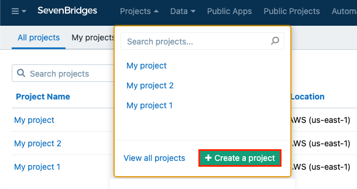
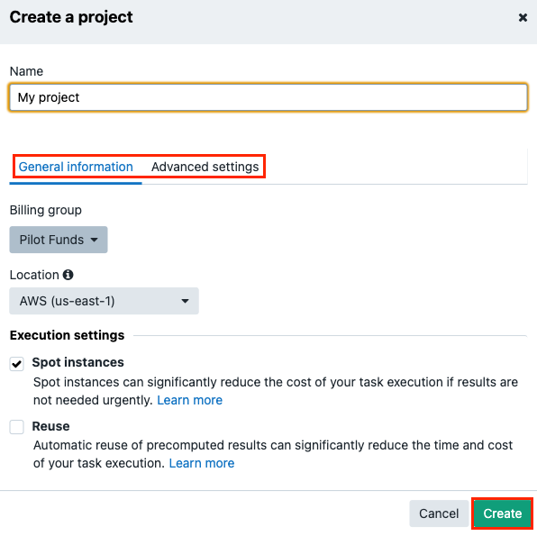

Create a project
Data analyses are project-specific on the Seven Bridges Platform. Before you can start your analysis, you need to create a project..
Click Projects in the top navigation bar and select Create a project.
 Name your project.
Set general information:
Set the billing group (note: for Enterprise users, the billing group is set per Division by the Division administrator).
Select the project location. The default location is AWS region us-east-1.
(Optional) Change your spot instance preference. The default setting is On.
(Optional) Enable Reuse (Memoization).
Manage advanced settings.
Set the billing group (note: for Enterprise users, the billing group is set per Division by the Division administrator).
Select the project location. The default location is AWS region us-east-1.
(Optional) Change your spot instance preference. The default setting is On.
(Optional) Enable Reuse (Memoization).

Click Create to finish creating the project.
Bravo.